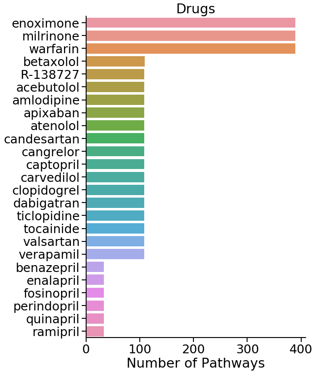
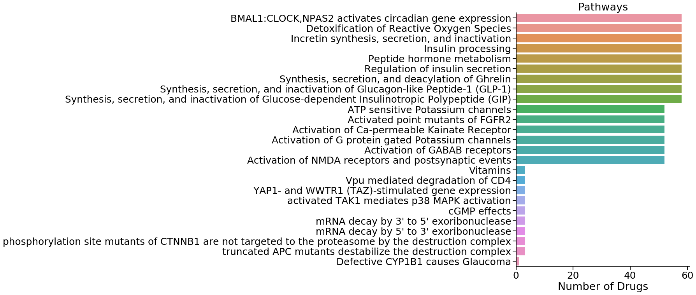

Drug/Chemical Reactome Pathways
Samir Akre - October 2019
import neo4j_functions.driver as neo4j_driver
import pandas as pd
import importlib
import progressbar
import seaborn as sns
import matplotlib.pyplot as plt
Importing curated lists of drugs and chemicals
chemical_list_df = pd.read_csv('lib/Oxidative Stress Text Mining Targets 4.1 - Summary of Oxidative Stress.csv')
drug_list_df = pd.read_csv('lib/Drug list total 04.05.19 - Overview Drug list.csv')
chemical_list_df.head(n=2)
|
Biological Events of Oxidative Stress |
Molecular and Functional Categories |
Molecule/Enzyme/Protein |
MeSH Heading |
MeSH Supplementary |
MeSH tree numbers |
Chemical Formula |
Examples |
Pharm Actions |
Tree Numbers |
References |
| 0 |
Initiation of Oxidative 1 |
Reactive Oxygen Species (ROS) |
Superoxide (anion radical) |
Superoxides |
NaN |
D01.248.497.158.685.750.850; D01.339.431.374.8... |
O2- |
Superoxide, Hydrogen Peroxide |
Oxidants |
D27.720.642,\nD27.888.569.540 |
PMID: 25547488 |
| 1 |
2 |
NaN |
Hydrogen Peroxide |
Hydrogen Peroxide |
NaN |
D01.248.497.158.685.750.424; D01.339.431.374.4... |
H2O2 |
NaN |
Anti-Infective Agents, Local |
D27.505.954.122.187 |
NaN |
drug_list_df.head(n=2)
|
Drug Category |
# |
Name |
Synonyms |
MeSH Descriptor |
MeSH tree(s) |
Common adverse effects |
Dosage (freq/amount/time/delivery) |
Duration (time) |
Pham Action |
| 0 |
Anticoagulants |
1 |
heparin |
['Calciparine', 'Eparina', 'heparina', 'Hepari... |
heparin |
D09.698.373.400 |
Thrombocytopenia, Cerebral haemorrhage, Haemog... |
1/18U/kg/iv |
2 days |
Anticoagulants, \nFibrinolytic Agents |
| 1 |
NaN |
2 |
warfarin |
['4-Hydroxy-3-(3-oxo-1-phenylbutyl)coumarin', ... |
warfarin |
D03.383.663.283.446.520.914\nD03.633.100.150.4... |
Haemorrhage, Haematoma, anaemia, Epistaxis, hy... |
1/2-10mg/day/po |
As needed |
Anticoagulants, \nRodenticides |
Looking for reactome ids of drugs in curated list
Looks for the lower case name of the drug from the curated list to match any of the lowercase names a drug in reactome is listed in.
- Outputs pandas data frame under variable
drugs_in_reactome
- 58/155 drugs found to have counter parts in reactome
importlib.reload(neo4j_driver)
driver = neo4j_driver.driver(uri = "bolt://localhost:7687", user = "neo4j", password = "Akre1234")
Test to see if I can find any drug in the reactome data set
driver.search_item_in_array(
array_field="name",
item='"herceptin"',
class_type='Drug',
info_cols = ['displayName', 'stId', 'isInDisease'],
verbose=True
)
Query:
MATCH (a:Drug) WHERE toLower("herceptin") IN [x in a.name | toLower(x)] RETURN a.displayName, a.stId, a.isInDisease
|
displayName |
stId |
isInDisease |
| 0 |
trastuzumab [extracellular region] |
R-ALL-9634466 |
True |
Querying to find reactome ID for each drug in curated list
drugs_in_reactome = pd.DataFrame()
for drug_name in drug_list_df.Name.unique():
result = driver.search_item_in_array(
array_field="name",
item='"%s"' % drug_name,
class_type='Drug',
info_cols = ['displayName', 'stId', 'isInDisease']
)
result['Name'] = drug_name
drugs_in_reactome = drugs_in_reactome.append(result)
drugs_in_reactome.head()
|
displayName |
stId |
isInDisease |
Name |
| 0 |
warfarin [cytosol] |
R-ALL-9014945 |
True |
warfarin |
| 0 |
dabigatran [extracellular region] |
R-ALL-9015346 |
True |
dabigatran |
| 0 |
rivaroxaban [extracellular region] |
R-ALL-9015055 |
True |
rivaroxaban |
| 0 |
apixaban [extracellular region] |
R-ALL-9038732 |
True |
apixaban |
| 0 |
edoxaban [extracellular region] |
R-ALL-9038742 |
True |
edoxaban |
print('Initial Drug List Size: ', drug_list_df.Name.nunique())
print('Drugs found in Reacome: ', drugs_in_reactome.Name.nunique())
Initial Drug List Size: 155
Drugs found in Reacome: 58
Looking for pathways associated with each drug found in the Reactome database
- Looks for 25 "nearest" pathways marked as
Pathways to any drug within 1-3 nodes
- Outputs to
pathways variable as a pandas dataframe
# Re-initializing driver to account for changes made to driver function
importlib.reload(neo4j_driver)
driver = neo4j_driver.driver(uri = "bolt://localhost:7687", user = "neo4j", password = "Akre1234")
# For each reactome drug ID, looks for 100 "closest" pathways within 1-2 nodes
pathways = pd.DataFrame()
for reactome_id, d_df, in progressbar.progressbar(drugs_in_reactome.groupby('stId')):
result = driver.get_n_relations(
class_1='Drug',
id_1="'%s'" % reactome_id,
id_class='stId',
# class_2='TopLevelPathway',
class_2='Pathway',
info_cols=['a.displayName', 'b.displayName', 'b.speciesName'],
edge_type='*1..2',
where_clause=" WHERE b.speciesName = 'Homo sapiens'",
verbose=False,
n=10000,
).rename(columns={
'a.displayName': 'Drug',
'b.displayName': 'Pathway',
'b.speciesName': 'Species'
})
pathways = pathways.append(result, ignore_index=True, sort=False)
pathways.head()
100% (58 of 58) |########################| Elapsed Time: 0:00:15 Time: 0:00:15
|
Drug |
Pathway |
Species |
edgeLength |
| 0 |
warfarin [cytosol] |
Chaperone Mediated Autophagy |
Homo sapiens |
2.0 |
| 1 |
warfarin [cytosol] |
Pink/Parkin Mediated Mitophagy |
Homo sapiens |
2.0 |
| 2 |
warfarin [cytosol] |
Receptor Mediated Mitophagy |
Homo sapiens |
2.0 |
| 3 |
warfarin [cytosol] |
Microautophagy |
Homo sapiens |
2.0 |
| 4 |
warfarin [cytosol] |
Amplification of signal from unattached kine... |
Homo sapiens |
2.0 |
pathways['drug'] = pathways['Drug'].str.split(' ').str.get(0)
# Number of drugs per pathway, seperated by edgelength
drugs_per_pathway = pd.DataFrame(pathways.groupby(['Pathway', 'edgeLength']).drug.nunique()).reset_index().sort_values(by=['edgeLength', 'drug'], ascending=[True, False])
# Number of pathways per drug, seperated by edgeLength
pathways_per_drug = pd.DataFrame(pathways.groupby(['drug', 'edgeLength']).Pathway.nunique()).reset_index().sort_values(by=['edgeLength', 'Pathway'], ascending=[True, False])
# Plotting top 15 and bottom 10 drugs
sns.set_context('talk', font_scale=1.5)
fig, ax = plt.subplots(figsize=(8, 12))
sns.countplot(
y='drug',
order=pd.concat([pathways_per_drug.head(15), pathways_per_drug.tail(10)]).drug,
data=pathways,
ax=ax
)
ax.set_xlabel('Number of Pathways')
ax.set_ylabel('')
ax.set_title('Drugs')
sns.despine()

# Plotting top 15 and bottom 10 pathways
sns.set_context('talk', font_scale=1.5)
fig, ax = plt.subplots(figsize=(8, 12))
sns.countplot(
y='Pathway',
order=pd.concat([drugs_per_pathway.head(15), drugs_per_pathway.tail(10)]).Pathway,
data=pathways,
ax=ax
)
ax.set_xlabel('Number of Drugs')
ax.set_ylabel('')
ax.set_title('Pathways')
sns.despine()

Test Cypher Queries in custom neo4j driver implementation
driver.get_node_info(
id_field="stId",
id_val="R-ALL-9634956",
class_type='Drug',
info_cols = ['displayName', 'name', 'isInDisease']
)
Query:
MATCH (a:Drug {stId: $idnum}) RETURN a.displayName, a.name, a.isInDisease
pyridostigmine [extracellular region]
['pyridostigmine']
True
|
displayName |
name |
isInDisease |
| 0 |
pyridostigmine [extracellular region] |
[pyridostigmine] |
True |
driver.get_n_nodes_info(
class_type='Drug',
info_cols = ['displayName', 'name', 'isInDisease'],
n=10
)
Query:
MATCH (a:Drug) RETURN a.displayName, a.name, a.isInDisease LIMIT 10
|
displayName |
name |
isInDisease |
| 0 |
trastuzumab [extracellular region] |
[trastuzumab, herceptin, D5v8, R-597] |
True |
| 0 |
CP-724714 [cytosol] |
[CP-724714] |
True |
| 0 |
Afatinib [cytosol] |
[Afatinib, BIBW2992, Irreversible TKI inhibito... |
True |
| 0 |
AZ5104 [cytosol] |
[AZ5104] |
True |
| 0 |
Sapitinib [cytosol] |
[Sapitinib] |
True |
| 0 |
Tesevatinib [cytosol] |
[Tesevatinib, EXEL-7647, XL-647, KD-019, XL647] |
True |
| 0 |
Lapatinib [cytosol] |
[Lapatinib, GW572016, Tykerb, Reversible tyros... |
True |
| 0 |
Neratinib [cytosol] |
[Neratinib, HKI-272, afatinib, Irreversible ty... |
True |
| 0 |
AEE788 [cytosol] |
[AEE788] |
True |
| 0 |
Canertinib [cytosol] |
[Canertinib, CI-1033, Irreversible TKI inhibit... |
True |